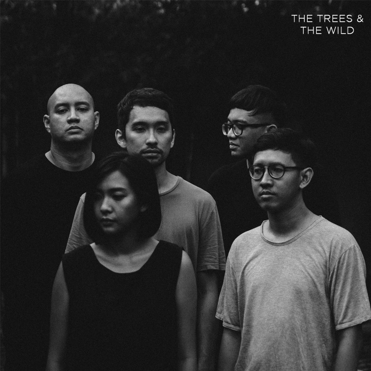

Pergerakan musik indie sudah cukup lama bergema di Indonesia dan berhasil menelurkan musisi-musisi dengan karya hebat dan kemampuan andal yang seringkali tidak terlalu dikenal di negeri sendiri. Indie sendiri merupakan kependekan dari independent, yang artinya mandiri. Maksudnya, para musisi-musisi indie mengerjakan semuanya secara mandiri, mulai dari proses pengerjaan lagu hingga pemasaran.
Ada begitu banyak musisi indie berkualitas di Indonesia yang sudah menghasilkan lagu-lagu yang tidak kamu ketahui dan bisa membuat kamu larut dan terpukau akan bakat-bakat mereka. Nah, beberapa karya musisi indie yang IDN Times kumpulkan ini dapat membangkitkan sisi nasionalisme di dalam dirimu untuk lebih menghargai karya negeri sendiri.
SORE merupakan band indie beraliran pop asal Jakarta dengan prestasi seperti penampilan yang sukses di Malaysia dan ranking teratas lima band yang wajib didengar versi TIME Asia. Semua personel band SORE ternyata kidal sehingga bermain musik dengan tangan kiri. Lagu Lihat milik SORE ini dijamin bisa bikin kamu adem dengan gaya musik jadul yang disepuh nuansa jazz ringan dengan suara saxophone yang mengiringi. ADVERTISEMENT
Payung Teduh merupukan empat pria alumni UI yang memiliki kekhasan bermusik dengan sentuhan pop keroncong jazz yang benar-benar membuai jiwa. Ini dia Untuk Perempuan yang Sedang Dalam Pelukan, bakal bikin kamu ngerasa cantik dengan lirik ala puisinya.
Pertama melesat ke puncak lewat soundtrack film Janji Joni yang dibintangi oleh Nicholas Saputra dan Mariana Renata, band yang biasa disebut WSATCC ini merupakan senior di dunia musik indie tanah air. Dengan gaya khas tahun 70an dan vokal orisinil yang dijaga tetap bernuansa mendayu, lagu Senandung Maaf berikut ini cocok buat kamu yang pengen meminta maaf dengan nada yang lebih ceria.
Bolehkah duo ini disebut band? Meski hanya terdiri dari dua orang, Banda Neira memiliki jenis musik yang menghipnotis dengan lirik yang tidak biasa. Coba deh rasain Rindu milik duo Rara Sekar dan Ananda Badudu ini.

Kebanyakan dari kamu pasti sudah kenal betul band yang satu ini. Berangkat dari label indie, Mocca menjadi salah satu band terbaik dengan aliran swing yang sukses mendulang fans hingga negeri Sakura karena beberapa lagu berbahasa Inggris-nya seperti I Remember.

Keunggulan The Trees and The Wild terletak pada kemurnian suara yang diproduksinya. Mengusung kebanyakan musik akustik, segala penampilan band ini memang membawa pendengar ke sensasi ada di tengah pepohonan dan padang liar yang menyejukkan. Buktinya ada pada salah satu lagu mereka yang berjudul Irish Girl ini.
Dari antara semua band yang sudah disebutkan, Discus merupakan band yang paling tidak dikenal di Indonesia karena aliran jazz progresif yang hanya diminati oleh sebagian kecil khalayak tanah air. Namun, keberanian mereka tampil beda menggiring mereka sampai negeri Paman Sam dan Benua Eropa, melebihi di negeri sendiri.
Band beranggotakan empat pria yang berasal dari Jogja ini sering membawakan lagu-lagu mereka yang banyak menyuarakan isu-isu yang dekat dengan dunia kita sehari-hari. Mengusung aliran British pop, Bangkutaman sudah cukup lama melanglangbuana di indie scene Indonesia. Baca Juga: Tak Kalah dari Raisa dan Isyana, Ini 5 Musisi Indie Cantik Kebanggaan Indonesia!
Band ini juga lebih layak disebut duo, namun vokal powerful milik mantan vokalis band EVO, Elda seakan membelah udara. Diiringi dengan petikan gitar tajam milik Adi Widodo yang sekaligus adalah pengaransemen setiap lagu-lagu folk apik yang mereka bawakan, Stars and Rabbit merupakan salah satu pemain di ranah indie yang terkuat.
Band yang beranggotakan 3 orang ini di gandrungi banyak remaja di indonesia, terutama para pencinta alam karna kebanyakan lagunya berisikan tentang alam, lagu yang paling terkenal nya berjudul "Zona Nyaman" yang di jadikan Ost Filem Filosofi Coffe 2.